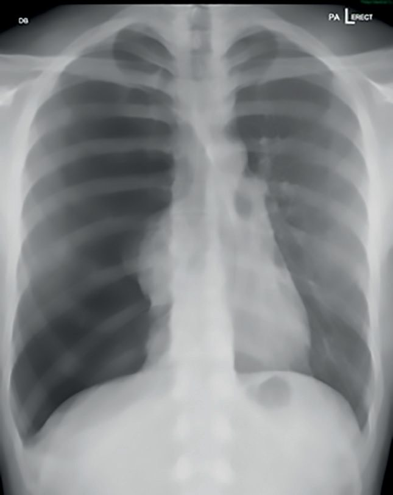
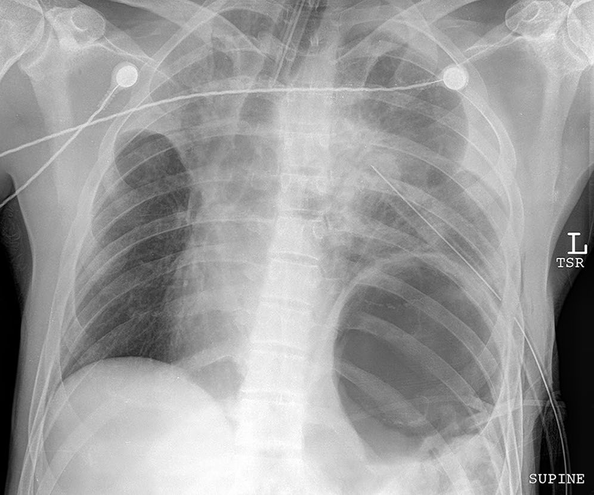
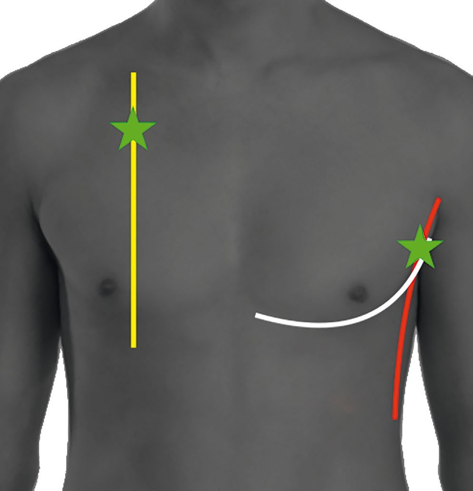
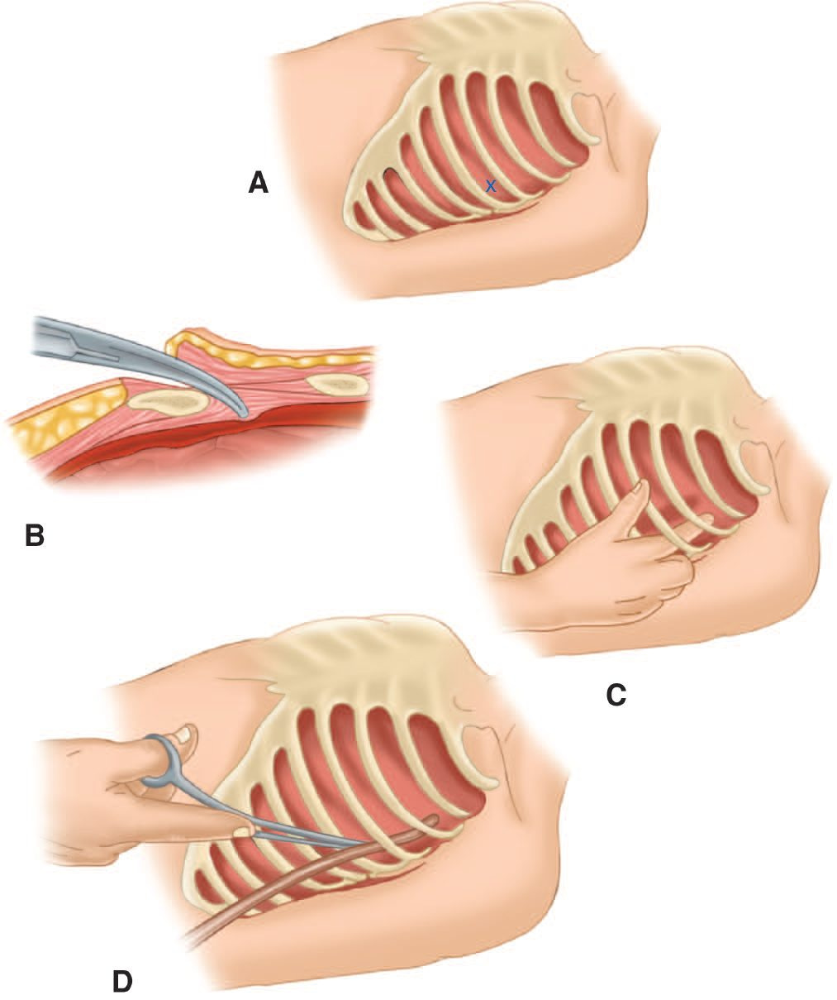

Thoracic Trauma
Summary
- Thoracic trauma is directly or indirectly involved in over 50% of trauma deaths, yet more than 80% of chest injuries can be managed non-operatively with tube thoracostomy alone [1].
- Thoracic injuries account for approximately 25% of trauma deaths, and 50% of patients who die of multiple injuries have a significant thoracic injury [2].
- Injuries are grouped into six immediately life-threatening conditions identified in the primary survey and six potentially life-threatening conditions identified in the secondary survey, together known as the "deadly dozen" [1].
Definition
Chest injuries are blunt (falls, motor vehicle collisions, transmitting high-energy forces to the chest wall and underlying structures) or penetrating (knives, gunshots), with rate of required operation higher for penetrating than blunt trauma [3]. The "deadly dozen" comprises: immediately life-threatening, airway obstruction, tension pneumothorax, pericardial tamponade, open pneumothorax, massive haemothorax, flail chest; and potentially life-threatening, aortic injuries, tracheobronchial injuries, myocardial contusion, diaphragmatic rupture, oesophageal injuries, pulmonary contusion [1].
Pathophysiology
- Tension pneumothorax develops from a one-way valve air leak (lung or chest wall) allowing air into the thoracic cavity without escape, progressively collapsing and compressing the affected lung, displacing the mediastinum, decreasing venous return, and compressing the contralateral lung [1][4].
- Open pneumothorax ("sucking chest wound") occurs when a chest wall defect exceeding roughly two-thirds the diameter of the trachea causes air to be preferentially drawn through the defect rather than the trachea during inspiration [1].
- Pericardial tamponade results from accumulation of as little as 50 mL of blood in the non-distensible pericardial sac, compressing the heart and reducing diastolic filling [1].
- Flail chest (≥2 consecutive ribs broken in ≥2 places, or ≥3 contiguous ribs fractured in ≥2 locations by other definitions) causes paradoxical chest wall motion; the associated pulmonary contusion (not the flail segment itself) is the principal cause of respiratory failure via decreased compliance and increased shunt fraction [1][4][5].
- Traumatic aortic rupture occurs at the relatively fixed aortic isthmus just distal to the left subclavian artery origin, from shear forces disrupting the intima and media during sudden deceleration; if the adventitia remains intact the patient may survive to reach hospital [1][4].
Clinical features
- Tension pneumothorax presents with respiratory distress, tachycardia, hypotension, tracheal deviation away from the affected side (a late finding), hyper-resonance, absent/decreased breath sounds, and distended neck veins, though neck veins may be flat with concurrent hypovolemia [1][5].
- Pericardial tamponade presents similarly with Beck's triad (distended neck veins, muffled heart sounds, falling arterial pressure), though this triad is often not appreciated in the noisy trauma bay; blood pressure may transiently improve with fluid, creating false reassurance [1][5].
- Flail chest is diagnosed clinically (not radiographically) in non-ventilated patients by observing paradoxical inward motion of the loose segment on inspiration [1].
- Tracheobronchial injury presents with a large continuous air leak, pneumomediastinum, persistent pneumothorax despite chest tube, and subcutaneous emphysema; oxygenation may worsen after chest tube placement [4].
- Aortic transection signs on chest radiograph include a widened mediastinum (≥8 cm), apical capping, loss of the aortopulmonary window/aortic contour, left hemothorax, and tracheal/nasogastric tube deviation to the right, though the chest X-ray is normal in 5% of patients with aortic tears [4].
- Sternal fracture and first/second rib fractures are risk factors for cardiac contusion and aortic transection respectively [4].

Etiology
- Rib fractures occur in approximately 10% of trauma admissions and are a marker of severe associated injury (nearly 50% of multiply injured patients have a rib fracture); mortality with chest wall injury is 6–12% [3].
- Massive haemothorax in blunt trauma most commonly arises from torn intercostal or internal mammary vessels secondary to rib fractures; in penetrating trauma, thoracic and abdominal viscera may be involved [1].
- Tracheobronchial injury is most common with blunt trauma, and bronchial injuries are more common on the right; 90% occur within 1 cm of the carina [4].
- Diaphragmatic injuries are more common on the left and more often result from blunt trauma [1][4].
Diagnosis
- Chest radiography is the first-line investigation and is almost universally obtained in the primary survey [1][3].
- Pitfalls include failure to clinically assess tracheal shift, failure to examine both front and back in a supine patient, and confusing a supine hemothorax's homogeneous opacity for the contralateral (normal) side [1].
- Thoracic CT/CT angiography has become the standard for chest wall, vascular, pleural, and parenchymal evaluation; erect chest radiography best reveals a small pneumothorax or air-fluid level, and up to 300 mL of blood may pool behind the diaphragm domes without becoming visible [1][3].
- Penetrating wounds within the "cardiac box" (sternal notch superiorly, costal margins inferiorly, nipples laterally) mandate evaluation for cardiac/great vessel injury with pericardial ultrasound (eFAST), CT angiography, bronchoscopy, and esophagoscopy/esophagography as indicated [3][4].
- Diagnostic sensitivity for penetrating aerodigestive injury approaches 100% when multiple complementary studies are performed [3].
- For tracheobronchial injury, bronchoscopy is diagnostic; for aortic injury, CT angiography of the chest is diagnostic [1][4].
- Diaphragmatic injury is difficult to detect; a nasogastric tube seen coiled in the chest on chest radiograph or an air-fluid level from herniated stomach is suggestive, but video-assisted thoracoscopy or laparoscopy is the most accurate evaluation [1][4].
- Blunt cardiac injury is excluded by a normal ECG and normal troponin; abnormal findings or hemodynamic instability warrant echocardiography and 24–48 hours of telemetry [4].

Scoring and Severity
- Traditional indications for emergent thoracotomy after chest tube placement for haemothorax include >1500 mL drained immediately, >200 mL/h for 4 consecutive hours, >2500 mL over 24 hours, or ongoing bleeding with hemodynamic instability [1][3][4].
- Occult pneumothorax is defined as identification on CT without evidence on plain radiography; observation may be considered for pneumothoraces with CT radial diameter up to 35 mm in the absence of instability or respiratory compromise [3].
- Resuscitative/emergency department thoracotomy is considered futile after CPR for more than 15 minutes in penetrating thoracic trauma, more than 10 minutes in blunt thoracic trauma (each despite endotracheal intubation), or in blunt trauma with no signs of life at the scene [1].
Treatment and Management
Tension pneumothorax: immediate decompression without waiting for radiographic confirmation, via needle/finger decompression in the "safe triangle" (bordered by latissimus dorsi posteriorly, pectoralis major laterally, and a line at the nipple level inferiorly) followed by formal tube thoracostomy [1][4]. Open pneumothorax: cover with a sterile occlusive dressing taped on three sides (flutter valve), followed by chest tube placement remote from the wound before definitive closure [1][4]. Pericardial tamponade: pericardiocentesis has no role in tamponade from penetrating myocardial injury because clot typically prevents aspiration; definitive treatment is operative via subxiphoid window, sternotomy, or left anterolateral thoracotomy [1]. Massive haemothorax: correct hypovolaemic shock, insert an intercostal drain, and proceed to thoracotomy if drainage/output criteria above are met; there is no role for clamping a chest tube to tamponade bleeding (exception: suspected tracheobronchial injury) [1][4]. Retained hemothorax after two well-placed chest tubes is treated with VATS drainage, and is the most important risk factor for empyema; all blood should be evacuated within 48 hours to prevent fibrothorax, entrapment, and empyema [4]. Flail chest/pulmonary contusion: oxygen, adequate analgesia (including epidural/intrapleural analgesia), and physiotherapy; mechanical ventilation reserved for respiratory failure; fluid restriction (avoid overload) is important because contused lung is very fluid-sensitive; surgical rib fixation may benefit selected patients [1][4]. Tracheobronchial injury: intubate with a long single-lumen tube to the unaffected side (avoid dual-lumen tubes); operative repair is indicated for large air leak with respiratory compromise, persistence beyond 2 weeks, inability to re-expand the lung, or injury >1/3 the tracheal diameter [4]. Aortic injury: control systolic blood pressure (100–120 mmHg, esmolol then nitroprusside) until definitive repair; other life-threatening injuries are addressed first; endovascular covered stent grafting is preferred for distal transections, with open repair (left thoracotomy, partial left heart bypass) if endovascular repair fails or is unsuitable; significant intracerebral hemorrhage is a contraindication to open repair [1][4]. Diaphragmatic injury: operative repair is recommended in all cases; a transabdominal approach is used if diagnosed within a week, a transthoracic approach (with lysis of adhesions) if diagnosed later; penetrating diaphragmatic injuries must be repaired via the abdomen (not the chest) to exclude concurrent hollow viscus injury [1][4].

Surgeries
Tube thoracostomy: performed via the "triangle of safety" (nipple/inframammary fold inferiorly, midaxillary line posteriorly, lateral pectoralis major border medially) at the 4th–5th intercostal space; open technique preferred in the unstable patient; chest tube size historically 32–36 Fr, though 14-Fr percutaneous catheters show equivalent success with less morbidity; secured and connected to −20 cm H2O suction [3]. Thoracotomy approach: posterolateral thoracotomy (5th interspace) provides access to lungs, pulmonary vasculature, and hemidiaphragm; right-sided approach exposes the proximal/mid-esophagus, trachea, and bilateral mainstem bronchi; left thoracotomy best exposes the distal esophagus, left lung, left ventricle, descending aorta, and left subclavian artery; median sternotomy exposes the right heart, ascending aorta, aortic arch with right-sided vessels, and pulmonary vasculature [3][4]. Emergency department thoracotomy (resuscitative thoracotomy): reserved for penetrating injury with signs of life present; left anterolateral thoracotomy with rib spreader, pericardiotomy anterior to the phrenic nerve, release of tamponade, control of cardiac injury, and cross-clamping of the descending thoracic aorta [1][4]. Vascular approaches: median sternotomy (with left 2nd-intercostal-space trap-door extension) for ascending aorta, innominate artery/vein, and proximal subclavian/carotid injuries; left thoracotomy for distal left subclavian artery and descending aorta; midclavicular incision with medial clavicle resection for distal right subclavian artery [4]. Bronchial injuries: right thoracotomy for right mainstem, tracheal, and proximal left mainstem injuries (avoids the aorta); left thoracotomy for distal left mainstem injuries [4].

Complications
- Retained hemothorax increases morbidity and is the most important risk factor for empyema; persistent pneumothorax despite two well-placed chest tubes warrants bronchoscopy to exclude mucus plug or tracheobronchial injury [3][4].
- Undiagnosed diaphragmatic rupture may present later with strangulation of herniated abdominal contents and high associated mortality [1].
- Myocardial contusion carries risk of ventricular tachycardia/fibrillation, highest in the first 24 hours; supraventricular tachycardia is the most common overall arrhythmia [4].
- Endovascular stenting that covers the left subclavian artery origin can cause left hand ischemia, treated with carotid-to-subclavian bypass [4].
- Pulmonary contusion causes progressively worsening hypoxemia over the first 24–48 hours [1][4].
Prognosis
- Aortic disruption is a common cause of sudden death after vehicle collision or fall from height; complete transection is rarely survived to hospital arrival, and hypotension in a patient with a widened mediastinum should prompt a search for another bleeding source rather than being attributed to the aortic injury [1].
- Delayed treatment of oesophageal injury is associated with exponentially rising mortality [1].
- More than 80% of chest injuries overall are managed successfully without thoracotomy [1].
References
- Bailey & Love's Short Practice of Surgery, 28th ed., Ch. 29 Torso and pelvic trauma
- Oxford Handbook of Clinical Surgery, 5th ed., Ch. 15 Major trauma
- Sabiston Textbook of Surgery, 22nd ed., Ch. 36, noting these figures derive from Vietnam War–era data rather than contemporary trials
- The ABSITE Review, 2022, Ch. 15 Trauma
- Schwartz's Principles of Surgery: ABSITE and Board Review, Ch. 7 Trauma